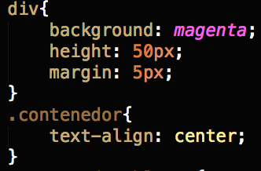
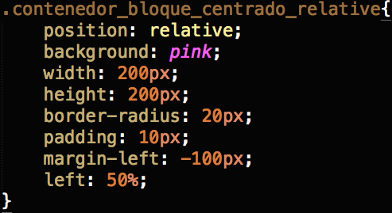

Layout, posicionamiento y tipografía
"Descubrí que mi obsesión de que cada cosa estuviera en su puesto, cada asunto en su tiempo, cada palabra en su estilo, no era el premio merecido de una mente en orden, sino al contrario, todo un sistema de simulación inventado por mí para ocultar el desorden de mi naturaleza."
– Gabriel García Márquez
Layout
La evolución constante de los navegadores, las herramientas de HTML y CSS para maquetar, estructurar y presentar el contenido ha requerido nuevos paradigmas y formas de pensar la arquitectura de información.
Hay nuevas pantallas cada día, anchos más grandes (Visualización gráfica), proporciones diferentes, interfaces más simples, de tamaños reducidos o con recursos limitados. Ej: las pantallas de los smart watch.
Layout - Ejemplos de pantallas
Observe que lo más importante a tener en cuenta en el diseño de una interfaz para pantalla, es el ancho de la pantalla, ya que el alto, se soluciona por lo general con el scroll, por lo que ya hemos mencionado del adoctrinamiento en el scroll vertical por parte de aplicaciones como twitter e instagram.
3d colección realista de diferentes pantallas - portátil, teléfono inteligente o tableta. (fuente:freepik)Layout - Ejemplos de pantallas
Estaciones de trabajo de diferentes dimensiones - Battlestations. (fuente:reddit)Layout - Ejemplos de pantallas
¿Cómo escoger el smartwatch correcto? (fuente:unocero)Layout - Ejemplos de pantallas
Galaxy fold, Samsung folding display (fuente:inverse)Layout - Ejemplos de pantallas
Emopulse Smile (fuente: wear.guide - smartwatches)Layout - Ejemplos de pantallas
LumiWatch convierte tu brazo en una pantalla táctil (fuente:cnet)Layout - Líquida
Hay que tener claro que el contenido siempre es independiente del diseño y el diseño independiente del dispositivo. En algunas ocasiones se requiere pensar el diseño para varias pantallas, no es solo cuestion de escalar el tamaño de la interfaz, es hacer que se adapte, es decir que la diagramación sea lìquida, y se integre lo mejor posible con el mayor número de viewports.
Layout - Líquida
Para poder diseñar una interfaz con estas características, es necesario empezar por entender como se comportan los elementos html que representan el contenido, luego como es posible modificar su compartamiento por medio de las hojas de estilo y por último empezar a pensar en diseños condicionales o media queries.
Flexbox
Sistema de diagramación de una sola dimensión, es decir una sola fila o una sola columna.
HTML
CSS
Resultado
Flexbox
Para alinear los hijos, simplemente es aplicar dos propiedades dependiendo de la visualización
flex-direction:column;
align-items:center;
flex-direction:row;
justify-content:center;
Gridlayout
Es un sistema de 2 dimensiones, es decir, puede modificar tanto filas como columnas, las reglas se aplican al contenedor padre y a los hijos.
Comprender este contenedor requiere de práctica y estudio de sus funciones, hay herramientas que facilitan su uso, por ejemplo: CSS Grid Generator
Juegos para prácticar
Posicionamiento
Posicionar correctamente elementos en el html es todo un arte, teniendo en cuenta la variedad de tipos de dispositivos para visualizar documentos html celulares, tablets, portátiles, computadores de escritorio, televisores, entre otros. El ancho de la pantalla cambia drásticamente entre dispositivos, un primer paso para lograr una buena visualización es el posicionamiento y luego aplicar reglas más versátiles como los media queries.
Posicionamiento
- Coordenadas en pantalla
- Position static
- Position fixed
- Position relative
- Position absolute
- Centrar horizontal
- Centrar vertical
Coordenadas en el documento
Para posicionar correctamente elementos en el documento, es importante entender como esta compuesta la ventana del navegador y como su tamaño influye en la visualización de los elementos html.
Por un lado esta el tamaño de la pantalla, este tamaño es fijo y luego esta el tamaño de la ventana del navegador este tamaño cambia dependiendo del uso.
Por último esta el tamaño del viewport del documento, que es el tamaño que tiene disponible el documento para ser visualizado.
Coordenadas de la pantalla
Sistema de coordenadas de pantalla
Coordenada del viewport horizontal
Se calcula el ancho luego de restarle el ancho de la barra de scroll y de las márgenes del documento al ancho del navegador.
Coordenada del viewport vertical
Se calcula luego de restarle el tamaño del área de las pestañas, barras de herramientas y de direcciones del navegador menos la parte del área de las barras de estado y descarga.
Coordenadas en el documento
Finalmente para maquetar el documento, contamos con un área que llamaremos el viewport y es la parte con la que finalmente el usuario interactúa.
Posicionamiento estático - Position static
Posicionamiento por defecto, que ignora las propiedades top, left, right y bottom. Los elementos se "pintan" en orden, como ellos aparecen en el flujo del documento.
Posicionamiento fijo - Position fixed
Es un posicionamiento que saca un elemento del flujo normal del documento html y permite ubicarlo por encima de los demás elementos, en otras palabras el elemento se posiciona relativo a la ventana del navegador. Este posicionamiento no se ve afectado por el scroll del documento y hace que los elementos siempre esten visibles y fijos en la posición en la cual fueron ubicados.
Posicionamiento fijo - Position fixed
Como ejemplo veamos, como crear una barra de redes sociales que siempre esta presente en la esquina superior derecha del navegador.
En el htmlPosicionamiento fijo - Position fixed
La estructura del documento, crea un contenedor con tres imágenes con los logos de tres redes sociales, y en l hoja de estilo es donde pasa la mágia.
En la hoja de estilosPosicionamiento fijo - Position fixed
Es frecuente encontrar elementos posicionados fijos en el documento para presentar funcionalidades como menús de navegación, botones para volver arriba, botones de redes sociales entre otros, a continuación un ejemplo con algunas ubicaciones importantes.
Posicionamiento fijo - Position fixed
Posicionamiento relativo - Position relative
El posicionamiento se controla con las propiedades top, left, right y bottom. El elemento se posiciona relativo a su posicionamiento normal, se ve afectado por el scroll y no hay desplazamiento de elementos que continuen después del elemento que se modifica usando posicionamiento relativo.
Posicionamiento relativo - Position relative
Se va a usar la misma estructura del ejemplo anterior, para demostrar la importancia de desacoplar los elementos de su presentación.
En el htmlPosicionamiento relativo - Position relative
Cambia el valor de la propiedad position y se agregan cambios en las propiedades, note que pasa con el scroll y con los demás elementos html.
En el cssPosiconamiento absoluto - Position absolute
El posicionamiento se calcula respecto al contenedor padre del elemento, de tal forma que los valores top, left, right y bottom se calcuan con base en un viewport definido por el elemento contenedor.
Posiconamiento absoluto - Position absolute
Se va a modificar el contenedor html, para posicionar elementos con una configuración específica simulando un formulario.
En el htmlPosicionamiento absoluto - Position absolute
Luego se posicionan los elementos con respecto a un contenedor padre, se recomienda que este contenedor padre tenga un posicionamiento relativo, no importa que no se usen los valores top, left, right o bottom.
En el cssCentrar horizontal
Para centrar un elemento html horizontalmente, se puede hacer de diferentes formas que dependen principalmente del tipo de display que tenga el elemento además de otras reglas de estilos que se esten aplicando.
Centrar horizontal
Elementos que se visualizan línea
Código html
Código CSS
Centrar horizontal
Elementos en bloque, para centrar estos elementos es usar la margen tanto a la derecha como izquierda para que se cálcule el espacio a cada lado automáticamente, dejando el elemento posicionado en el centro horizontalmente.
Código html
Código CSS
Centrar horizontal
También es posible centrar un elemento que este posicionado absolutamente dentro de un contenedor padre, usando la ubicación en porcentajes, lo cual obliga al navegador a tener que realizar ajustes en la posición del elemento.
Código html
Código CSS
Centrar vertical
Centrar verticalmente un elemento requiere de tener presente el comportamiento del documento sobretodo el scroll vertical que genera el contenido. Una buena práctica es usar un contenedor para posicionar un elemento de un tamaño conocido verticalmente usando porcentajes.
Código html
Código CSS
Texto y Tipografía
El texto es uno de los principales elementos del documento, html retoma y mejora la mayoría de los conceptos presentes en el diseño editorial y los representa por medio de reglas de estilo sencillas de seguir.
- Color y tamaño
- Propiedades del texto
- Pseudo-clases
- Tipos de fuentes predefinidas
- Tipos de fuentes personalizadas
Color
Para cambiar el color del texto, se utiliza el color representado en alguna de las formas ya vistas: rgb, rgba, hexadecimal o una cosntante. Se utiliza la propiedad color sobre una etiqueta que contenga texto.
Color
Usando cualquiera de los selectores que ya hemos visto, en este caso el selector universal, se modifica la presentación del color de texto del elemento.
Código html

Código CSS
Tamaño
Para específicar la medida de la fuente, se pueden usar varios tipos de unidades, el más usado es el pixel (px) se recomienda usar números naturales para que el render en la página se ralice mejor, también se soporta usar porcentajes para que el texto se adapte mejor al contenedor al igual que los em donde un m, es valor del ancho de la m, esto también se usa mucho para ajustar el contenido entre dispositivos.
Tamaño
Se usa la propiedad font-size y se le específica el valor que tendrá el texto en alguno de los sitemas de unidades soportado.
Código html
Código CSS
Propiedades del texto
text-align Sirve para alinear el texto, los posibles valores son: justify, left, right, center... Recuerde que esta propiedad también sirve para centrar horizontalmente elementos con display in-line.
Código html
Código CSS
Bordes
No es precisamente una propiedad del texto, sino un adorno que se le puede poner a la mayoría de elementos html y nos permite definir un contorno que cumpla algunas propiedades como color, grosor, estilo, entre otros. Para este caso se incluye en la explicación para que sea fácil ver gráficamente que pasa con otras propiedades que veremos a continuación.
Código html
Código CSS
Propiedades del texto
margin - padding Estas dos propiedades tiene efectos similares sobre los elementos html, el margin define la margen externa del elemento contenedor y el padding se considera la sangría interna del elemento. Se puede definir cuatro valores principales: top, left, rigth, bottom. Recuerde que un elemento html es un contenedor que tiene estas características comunes.
Propiedades del texto
La siguiente imagen, muestra como se ve gráficamente el margin y el padding, hablamos de afuera y adentro del contenedor. Recuerde que si un elemento tienen un ancho definido y margen automática a la derecha y a la izquierda, quiere decir que el elemento queda centrado.
Propiedades del texto
Se define de dos formas, especificando cada uno de los valores, padding-top, padding-rigth, padding-bottom, padding-left o usando un atajo definiendo los valores usando el nombre de la propiedad padding seguída de los valores top, right, bottom, left.
Código html
Código CSS
Propiedades del texto
letter-spacing: Define el espacio entre letras, a esta propiedad se le conoce comunmente como tracking.
line-height: Define el interlineado del párrafo, o espacio entre reglones.
Código html
Código CSS
Pseudo-clases
Son palabras claves que pueden agregarse al final de un selector para definir estilos que va tener el elemento cuando este en un estado único, para este caso vamos a ver como cambiar el estilo de un elemento cuando pasa el mouse por encima de él.
Código html
Código CSS
Tipos de fuentes predefinidas
Son el conjunto de fuentes que esta presentes en la mayoría de computadores, recuerde que una fuente tipografíca para poder ser visualizada en el computador, la fuente debe estar instalada. Las siguientes fuentes se consideran fuentes seguras, porque "casi" siempre van a estar instaladas en el computador donde se ve el documento html
Verdana, Georgia, "Palatino Linotype", "Times New Roman", Arial, "Comic Sans MS", Impact, "Trebuchet MS", Tahoma, "Lucida Console"Tipos de fuentes predefinidas
font-family:Define la fuente que va a ser aplicada al elemento, si el nombre de la fuente tiene varias palabras, se debe poner entre comillas sino se pone sin comillas.
Código html

Código CSS
Tipos de fuentes personalizadas
Los tipos personalizados, son las fuentes de una familia específica, que normalmente se debe pagar por ella o puede ser gratuita, pero debemos tener los derechos de uso en la web. Estas fuentes como no son estandar, se deben incluir en una carpeta dentro de la carpeta donde esta el documento, se recomienda llamar a esta carpeta fonts y debemos incluir el formato de fuente compatible con las diferentes plataformas, esta puede ser una tarea dispendiosa, por tanto usamos una herramienta online que nos facilita la conversión de la fuente. Para este caso usaremos font squirrel
Tipos de fuentes personalizadas
Se debe primero convertir la tipografía y guardarla en una carpeta del proyecto y luego usarla en los estilos de los elementos.
Código html
Código CSS
Tipos de fuentes personalizadas